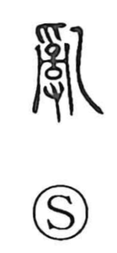

乱

Uncategorized
Kun: midareru, midasu | On: ran
disorder ・ to be disordered ・ to set in order
Explanation
The original form is 亂. It depicts thread (yo) wound on a reel (kei), with the strands in a tangle. Hands are shown above and below (爪 and 又, both archaic hand forms) working to tease the knots apart, and a bone spatula (乙) serves as the tool used to loosen and straighten the threads. From this graphic scene the character expressed both the state of being in disorder and the deliberate act of restoring order. The later vulgar form 乱 became the standard, and it now stands for 亂 with both senses.